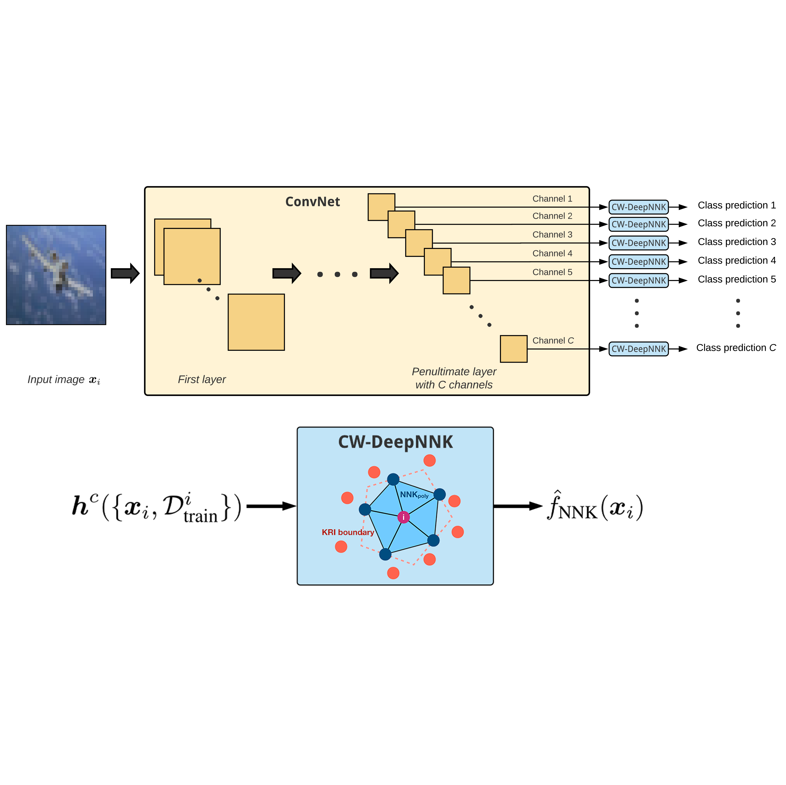
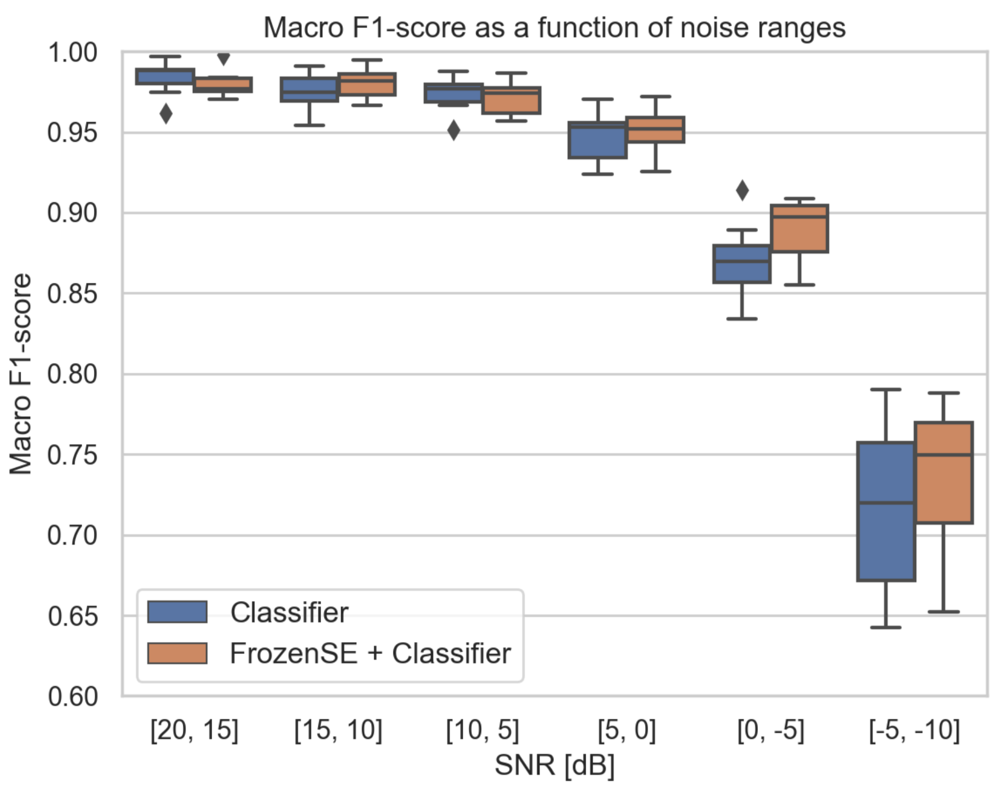

|
Research
I'm interested in machine learning, computer vision, audio processing, and neural network interpretability.
|
|  |
Channel-Wise Early Stopping without a Validation Set via NNK Polytope Interpolation
David Bonet,
Antonio Ortega,
Javier Ruiz-Hidalgo,
Sarath Shekkizhar,
Asia Pacific Signal and Information Processing Association (APSIPA), 2021
paper /
code /
abstract /
bibtex
State-of-the-art neural network architectures continue to scale in size and deliver impressive generalization results, although this comes at the expense of limited interpretability. In particular, a key challenge is to determine when to stop training the model, as this has a significant impact on generalization. Convolutional neural networks (ConvNets) comprise high-dimensional feature spaces formed by the aggregation of multiple channels, where analyzing intermediate data representations and the model's evolution can be challenging owing to the curse of dimensionality. We present channel-wise DeepNNK (CW-DeepNNK), a novel channel-wise generalization estimate based on non-negative kernel regression (NNK) graphs with which we perform local polytope interpolation on low-dimensional channels. This method leads to instance-based interpretability of both the learned data representations and the relationship between channels. Motivated by our observations, we use CW-DeepNNK to propose a novel early stopping criterion that (i) does not require a validation set, (ii) is based on a task performance metric, and (iii) allows stopping to be reached at different points for each channel. Our experiments demonstrate that our proposed method has advantages as compared to the standard criterion based on validation set performance.
@article{bonet2021channel,
title={Channel-Wise Early Stopping without a Validation Set via NNK Polytope Interpolation},
author={Bonet, David and Ortega, Antonio and Ruiz-Hidalgo, Javier and Shekkizhar, Sarath},
journal={Asia-Pacific Signal and Information Processing Association Annual Summit and Conference (APSIPA ASC)},
year={2021}
}
|
 |
Speech Enhancement for Wake-Up-Word detection in Voice Assistants
David Bonet,
Guillermo Cámbara,
Fernando López,
Pablo Gómez,
Carlos Segura,
Mireia Farrús,
Jordi Luque,
IberSPEECH, 2020
paper /
abstract /
bibtex
Keyword spotting and in particular Wake-Up-Word (WUW) detection is a very important task for voice assistants. A very common issue of voice assistants is that they get easily activated by background noise like music, TV or background speech that accidentally triggers the device. In this paper, we propose a Speech Enhancement (SE) model adapted to the task of WUW detection that aims at increasing the recognition rate and reducing the false alarms in the presence of these types of noises. The SE model is a fully-convolutional denoising auto-encoder at waveform level and is trained using a log-Mel Spectrogram and waveform reconstruction losses together with the BCE loss of a simple WUW classification network. A new database has been purposely prepared for the task of recognizing the WUW in challenging conditions containing negative samples that are very phonetically similar to the keyword. The database is extended with public databases and an exhaustive data augmentation to simulate different noises and environments. The results obtained by concatenating the SE with a simple and state-of-the-art WUW detectors show that the SE does not have a negative impact on the recognition rate in quiet environments while increasing the performance in the presence of noise, especially when the SE and WUW detector are trained jointly end-to-end.
@inproceedings{bonet21_iberspeech,
author={David Bonet and Guillermo Cámbara and Fernando López and Pablo Gómez and Carlos Segura and Jordi Luque and Mireia Farrús},
title={{Speech Enhancement for Wake-Up-Word detection in Voice Assistants}},
year=2021,
booktitle={Proc. IberSPEECH 2021},
pages={41--45},
doi={10.21437/IberSPEECH.2021-9}
}
|
|
BCN2BRNO: ASR System Fusion for Albayzin 2020 Speech to Text Challenge
Martin Kocour,
Guillermo Cámbara,
Jordi Luque,
David Bonet,
Mireia Farrús,
Martin Karafiat,
Karel Veselý,
Jan Cernocky,
IberSPEECH, 2020
paper /
abstract /
bibtex
This paper describes the joint effort of BUT and Telefónica Research on the development of Automatic Speech Recognition systems for the Albayzin 2020 Challenge. We compare approaches based on either hybrid or end-to-end models. In hybrid modelling, we explore the impact of a SpecAugment layer on performance. For end-to-end modelling, we used a convolutional neural network with gated linear units (GLUs). The performance of such model is also evaluated with an additional n-gram language model to improve word error rates. We further inspect source separation methods to extract speech from noisy environments (i.e. TV shows). More precisely, we assess the effect of using a neural-based music separator named Demucs. A fusion of our best systems achieved 23.33 % WER in official Albayzin 2020 evaluations. Aside from techniques used in our final submitted systems, we also describe our efforts in retrieving high-quality transcripts for training.
@inproceedings{kocour21_iberspeech,
author={Martin Kocour and Guillermo Cámbara and Jordi Luque and David Bonet and Mireia Farrús and Martin Karafiát and Karel Veselý and Jan Černocký},
title={{BCN2BRNO: ASR System Fusion for Albayzin 2020 Speech to Text Challenge}},
year=2021,
booktitle={Proc. IberSPEECH 2021},
pages={113--117},
doi={10.21437/IberSPEECH.2021-24}
}
|
|
Improved Neural Network Generalization using Channel-Wise NNK Graph Constructions
, Bachelor's Thesis
David Bonet,
Universitat Politècnica de Catalunya (UPC), 2021
PDF /
bibtex
@mastersthesis{Bonet2021BThesis,
author = {David Bonet},
title = {Improved Neural Network Generalization using Channel-Wise NNK Graph Constructions},
school = {Universitat Politècnica de Catalunya},
address = {Barcelona (Spain)},
year = {2021},
type = "{B.S. Thesis}",
}
|
|
This template is a modification to Jon Barron's website.
|
|
{kind=link}